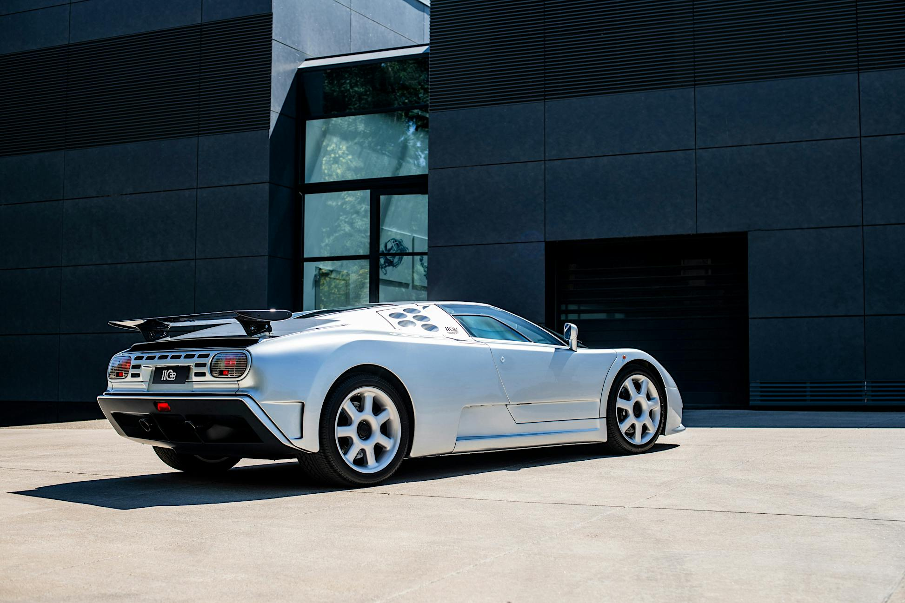
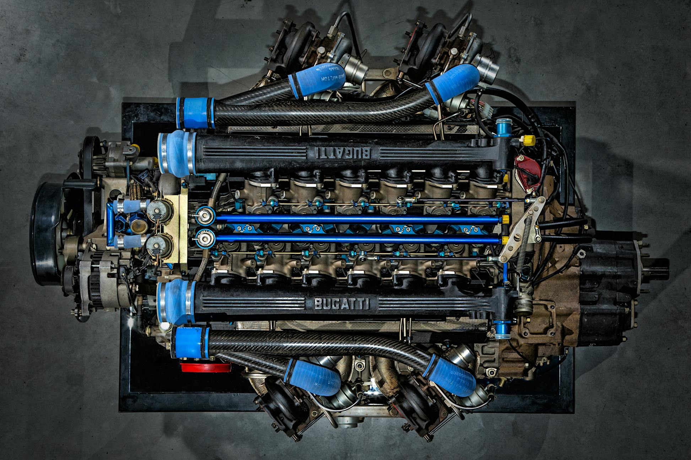
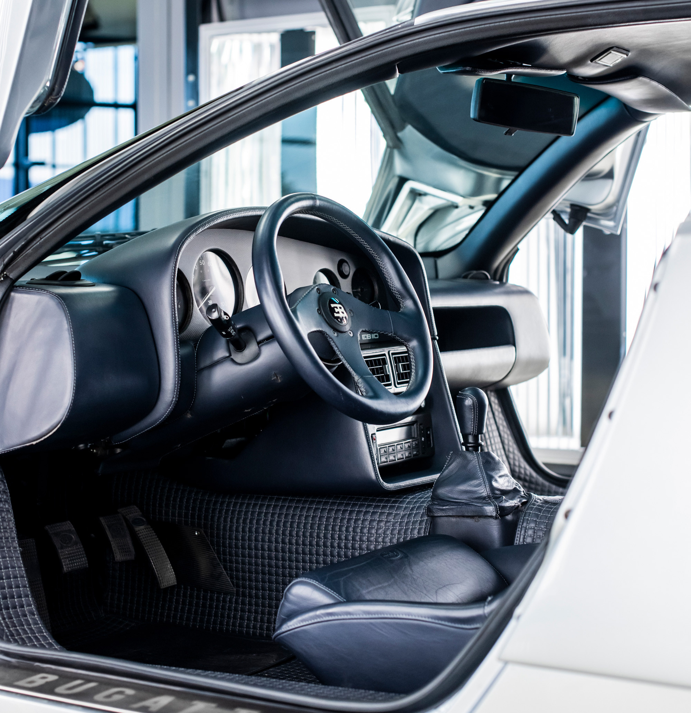
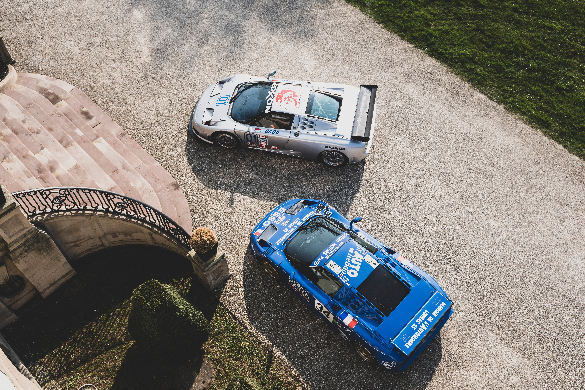
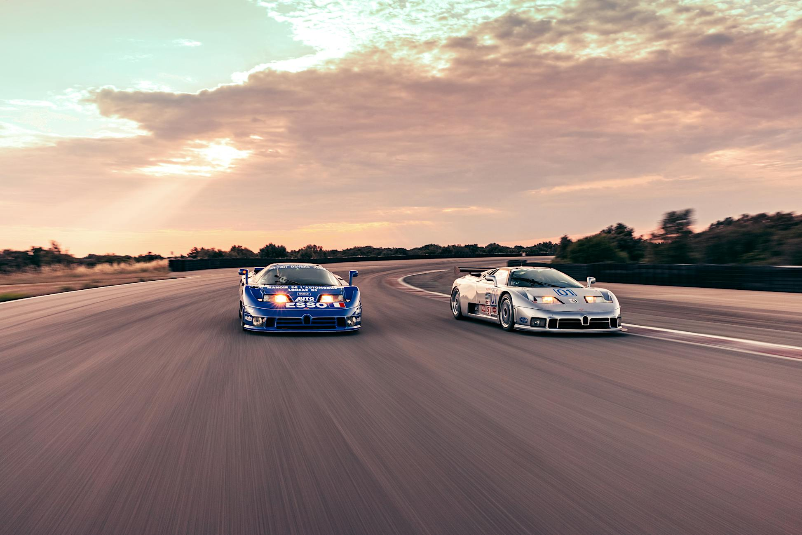
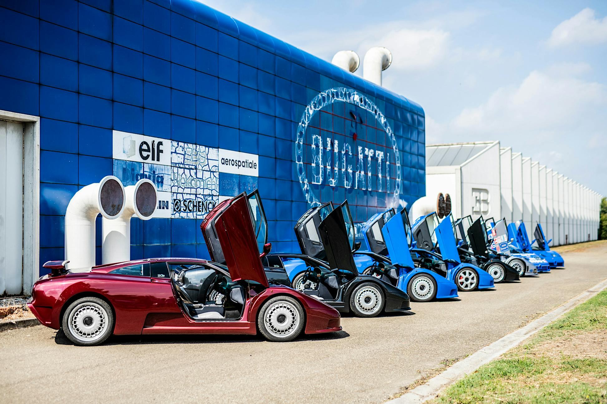

EB110
THE GREAT COMEBACK
In 1991 the EB110 catapulted BUGATTI once again to the pinnacle of the automotive world. The unveiling of the EB110 caused global sensation and established the recipe of modern BUGATTI hyper sports cars.

THE NEW REFERENCE
With the EB110, BUGATTI combined a high-revving V12 engine, four turbochargers with intercoolers, an ultra-lightweight carbon monocoque, and advanced all-wheel drive. The EB110 was entirely in a league of its own. The technology, innovations, design and handling were years ahead of the competition.

GROUNDBREAKING FIGURES
The car was first presented as EB110 GT (Gran Turismo) with 560 PS and, shortly after, also as a lighter and more powerful EB110 SS (Super Sport) version with 610 PS at 8.250 rpm. Unmatched at the time and impressive even today.

POWER IN CONTROL
To ensure that all the torque translates into efficient propulsion, BUGATTI developed an all-wheel drive system with viscous locking differential, a rear limited-slip differential, and a torque split of 27:73 percent.

PUSHING THE ENVELOPE
The EB110 SS marked several records: with an acceleration from 0 to 100 km/h in 3.26 seconds and a top speed of 351 km/h it was the fastest production automobile of its time. And it's not just the performance figures that were revolutionary - so too was the vehicle handling.

A BRIDGE BETWEEN PAST AND FUTURE
All-wheel drive, four turbochargers and carbon fiber monocoque: the EB110 introduced a unique architecture which has continuously evolved for the last three decades.
